|
(click to enlarge)
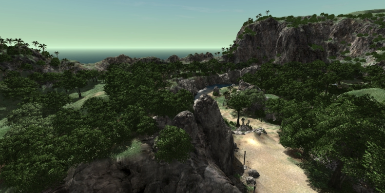
Introduction
The Forest Editor is a tool that allows you to quickly create massive amounts of vegetation for your level including patches of trees, forests, and fields of smaller elements such as shrubs and plants. Entire forests can be laid down using simple techniques similar to painting on a canvas, where instead of paint your brushes, lay down 3D models on the terrain.
Setup
This article was written using a newly generated project with the
Full Template, which ships with plenty of free assets for testing and
learning. To save time and focus on this specific section of the
documentation, we are going to bypass asset creation until later on.
The Full Template has one tree, located in game/art/shapes/trees/defaulttree and is called defaulttree.DAE. You can also use the Forest Editor to paint other objects, such as rocks, bushes, and any other 3D shape in .DAE or .DTS format.
To get started: open the Torque 3D Toolbox; select your project; and then load the Empty Terrain level.
Interface
To access the Forest Editor press the F8 key, or select it from the drop down menu at the top of the World Editor, by choosing Editors > Forest Editor, or click on the leaf icon to get started .
The Tools Palette on the left of the screen will populate with Forest Editor specific tool buttons represented by icons:
Tool Descriptions (top to bottom):
- Select Item - Select an individual object in forest
- Translate Item - Move the currently selected object
- Rotate Item - Rotate the currently selected object
- Scale Item - Grow or shrink the currently selected object
- Paint - Used for painting objects on terrain
- Erase - Used for erasing objects from a terrain
- Erase Selected - Used to delete the currently selected objects
The Forest Editor has two main panels which will appear on the right of the screen whenever the Forest Editor is active.. On the top is the Forest Editor pane which is divided into two tabs: Brushes and Meshes. The Forest Editor works in a manner similar to painting on a canvas with a brush, except instead of paint the Forest Editor lays down shapes onto the terrain of your level. A Brush in the Torque 3D Forest Editor is composed of one or more mesh elements, which can be alternated between when painting.
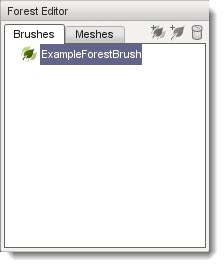
The Meshes tab contains a list of all Forest Mesh elements which can be assigned to a brush. A forest mesh is really a datablock which is an information structure that defines a model and the properties which control it in the forest.
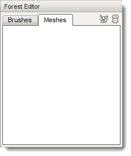
On the bottom of the right side of the screen is the Properties pane. The Properties pane displays information about the currently selected element in active tab of the Forest Editor pane.
Before we can use these tools and paint a forest, we need to import a forest mesh and set up a brush.
Creating a Forest Mesh
To create a forest mesh tart by clicking on the Meshes tab in the Forest Editor pane. There are two icons in the top right. The trash bin deletes the currently selected existing mesh, and the leaf icon will adds a new mesh. Click on the Add New Mesh icon.
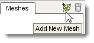
A file browser should appear. Locate the sample tree mesh file, defaulttree.DAE, which can be located in the
game/art/shapes/trees/defaulttree folder.
(click to enlarge)
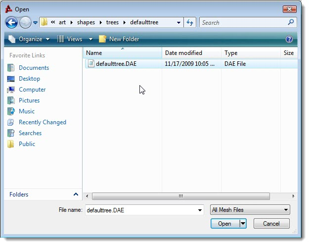
A new mesh will be added to the tab using the same name as the file you selected:
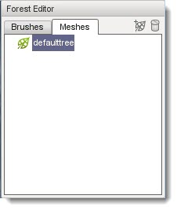
The Properties pane will also be populated with fields and values which describe the new mesh.

Switch to the Brushed Tab. You will see that the new mesh has also automatically been added to the list of Brushesallow you to select it as the element to paint with:
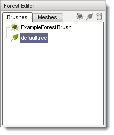
Select the new brush by clicking on its name. The Properties pane will be updated to display the properties of the brush which can be used to randomize the placement and appearance of the selected mesh:
Using a Brush
Now that you have an available brush you can begin painting a forest. Select the
defaulttree brush from the sample assets. Move the mouse until a blue circle appears on the terrain. This is the outline of your forest brush and shows where you are going paint. To begin painting, left click the mouse and drag it around on the terrain.
(click to enlarge)
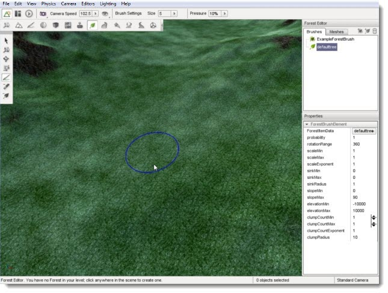
If this is the first time you have painted a forest in a level then no Forest object exists in the level yet. However, a forest object must exist , so you will be prompted to confirm that you want to add one.
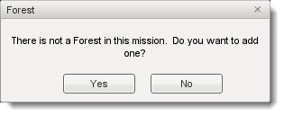
Answering No will abort the forest painting operation. Answering Yes will automatically create a new Forest object, add it to your level, and return you to the level with the brush still active ready to continue painting. You can examine the forest object the same way as any other object using the Object Editor but it has no useful properties to edit so lets skip it for now an continue on with our forest painting operation.:
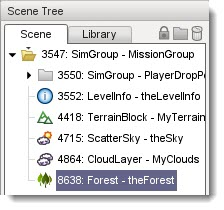
Once again, hold down the left mouse button and drag the mouse over terrain. As you move the brush trees will begin showing up in the wake of your brush. To change the size of your brush, pull the mouse wheel toward you to increase the size or push it away to decrease the size. The blue circle will grow or shrink to indicate your new size.
Note that you do not have the ability to move the camera forward and back in the Forest Editor because of the availability of the brush resizing feature. To move the camera forward and back while using the Forest Editor press the Up Arrow to move forward and the Down arrow to move backward.
Keep painting until you have a decent patch of trees:
(click to enlarge)
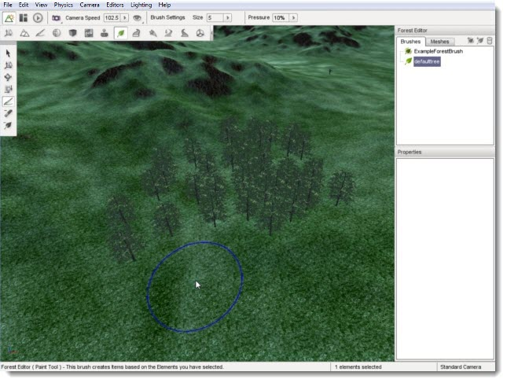
If you move your camera down to ground level, you can see how your forest will look from a player perspective. Youll notice that these are full 3D objects that react to collision, sunlight, and external forces.
(click to enlarge)
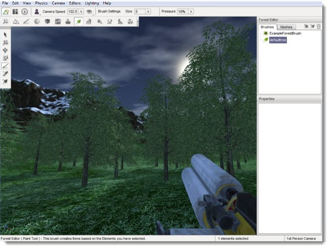
Adjusting Properties
You can edit the properties of a Mesh to adjust how each tree is placed when painting. To adjust the density of mesh placement switch to the Meshes tab then select your defaulttree entry. The Properties pane will update to display the properties of your mesh. Change the radius property from 1 to 2 then press the Enter key.
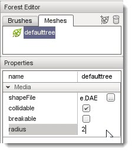
This radius tells the tool a rough amount of space this item takes up. The value is a decimal value and has no limits, but remember that if the value is too low your trees may overlap, and if it is too high you may not get any trees to appear because the spacing might be larger than the brush itself. Now when you paint you should get more spacing between the placed meshes.
(click to enlarge)
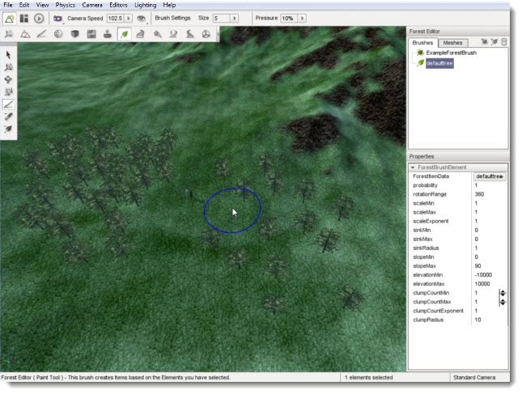
As mentioned previously, you can use the Forest Editor to paint additional environmental objects such as rocks, shrubs, or any other 3D model. Since you can paint different types of objects, you might want to organize your brushes and meshes.
In the Brushes tab, click on the Add New Brush Group icon. This will add a new entry in the brush list, called "Brush".
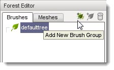
Click on the text of the new brush group. This will allow you to edit the text of the brush. Name the brush group "Trees" then press the enter key.
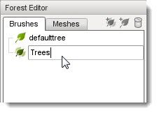
Now, you can click on the defaulttree element and drag it onto the Trees brush group. Your Brushes tab should look like the following:
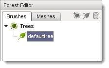
Switch to the Meshes tab, and click the Add New Mesh tree icon to add a new one. Select
game/art/shapes/rocks/rock1.dts as your model:
(click to enlarge)
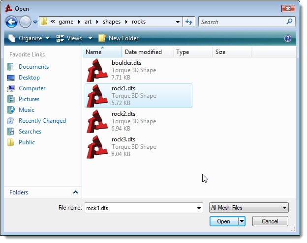
The rock1 mesh will be added to your Meshes list. Unlike trees, the
rock1 mesh is fairly large and somewhat spherical. Spreading out the placement of this mesh will help prevent dense blobs of rocks being placed. In the Mesh properties tab, increase the rock1 radius to 3:
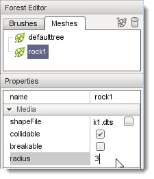
Switch back to the Brushes tab. Create a new brush group and name it
Rocks. Your rock1 mesh element should already be in the list, so drag it onto the
Rocks brush group to keep things organized. Your Brushes tab should look like the following:
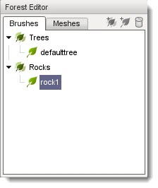
Go ahead and paint down some rocks in your level. You should end up with a patch of huge boulders with fairly even spacing:
(click to enlarge)
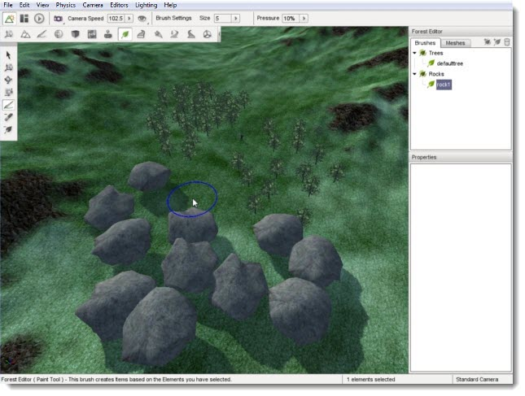
You might have noticed all the boulders are the same size.
For added realism, you can adjust the brush properties to
randomize its appearance. Select rock1, then decrease the scaleMin and increase the scaleMax:
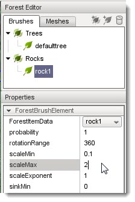
Begin painting a new set of rocks. Now, you will end up with rocks of
varying sizes. Some will be as small as your player, while others could
be twice the size of the original mesh:
(click to enlarge)
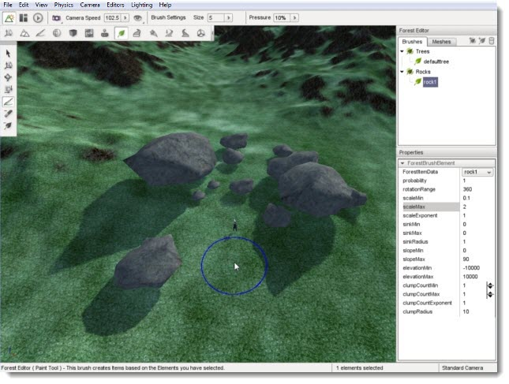
(click to enlarge)
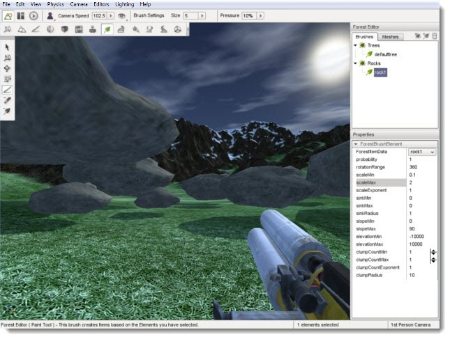
Editor Settings
The actions available in the tools palette give you absolute control of your forest placement. The first four tools allow you to adjust individual elements of your forest, such as a single tree. The Select Item tool allows you to select an individual element, which is indicated by a colored axis gizmo appearing on top of the item:
(click to enlarge)
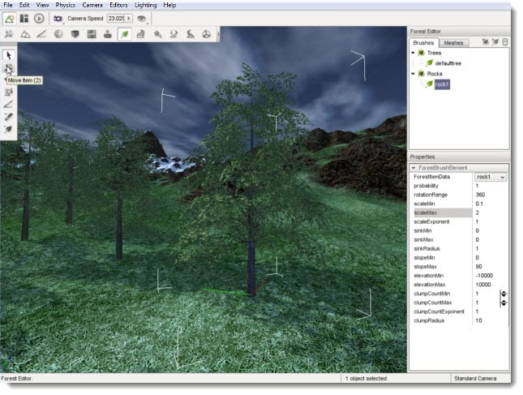
Once you have a tree selected, you can change its location
without moving the entire forest. With the tree selected, activate the
Move Item tool. The arrows gizmo will appear, allowing
you to drag the tree around in the world:
(click to enlarge)
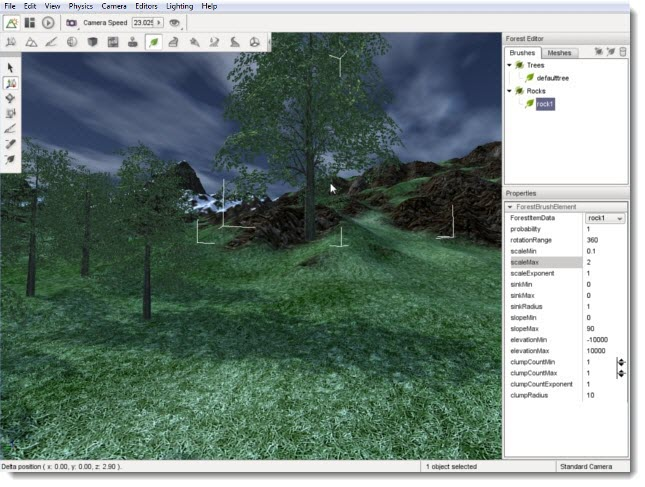
The Rotate tool, represented by a spherical gizmo, allows
you to adjust the orientation of the tree in 3D space. You can use this
to make individual trees lean in a specific direction:
(click to enlarge)
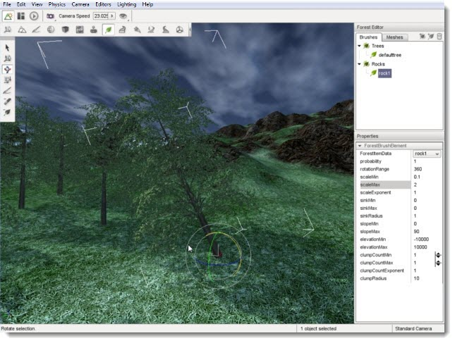
The Scale tool can be used to shrink or grow an individual tree:
(click to enlarge)
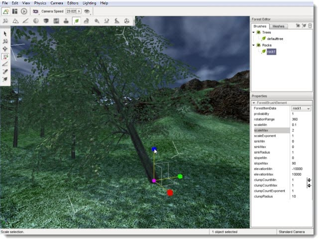
When you need to tidy up a forest, such as removing rogue trees, pressing the delete key when you have a tree selected will remove it from the scene:
(click to enlarge)

If you need to delete entire sections of a forest, you may not want to delete each tree individually. Instead, you should use the Erase tool. The Erase tool is located directly below the Paint tool. When activated, the circle representing your brush in the world will turn from blue to red when you move your brush over the terrain:
(click to enlarge)
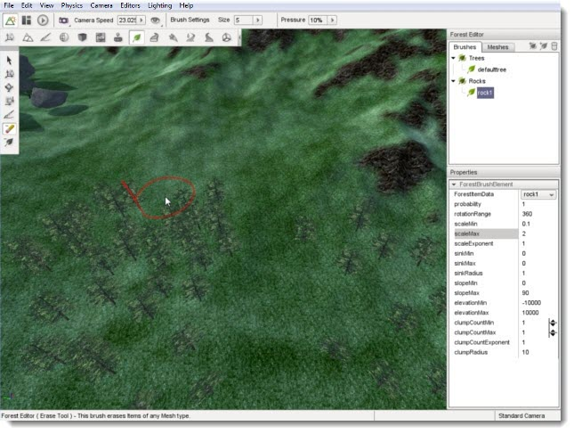
Left click your mouse and drag the brush over
a section of trees. Any
trees under your brush will be removed from the forest object. This is
much faster than deleting individual trees:
(click to enlarge)
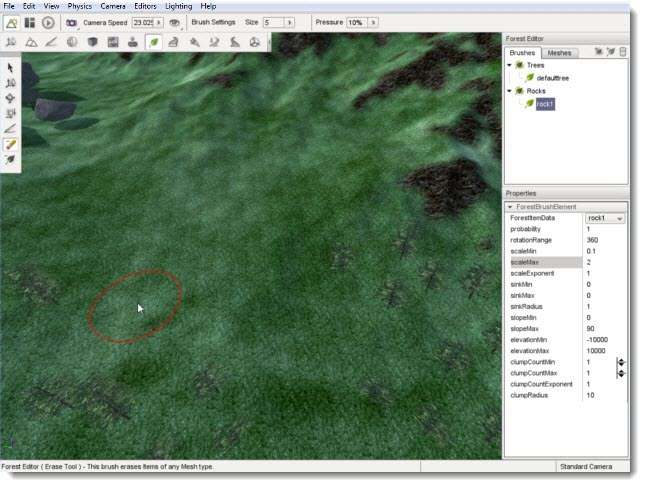
If you want to remove a
larger amount of trees such as clearing an area for a road, you can set the width of the brush to a specific width. Locate the Size dropdown on the Tool Settings bar and click on it. A slider will appear so you can increase the circumference of your brush. Set it to something fairly large, like 20:
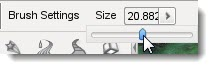
Now you can
remove much larger sections of the terrain, making massive forest creation a snap:
(click to enlarge)
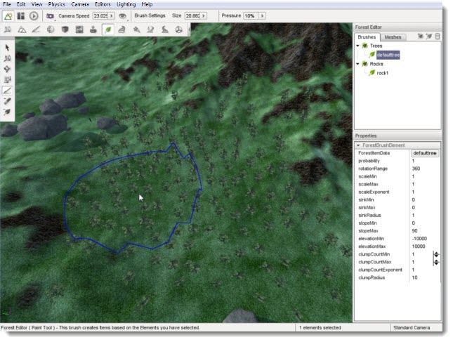
Conclusion
The purpose of this guide was to walk you through the Forest Editor's interface and typical usage. Used in conjunction with the Terrain Editor and Terrain Painter, you can fabricate some amazing and realistic environments for your game. Remember to save your work often and do not be afraid to experiment first! |
{kind=link}
{kind=link}
{kind=link}
{kind=link}
{kind=link}
{kind=link}
{kind=link}
{kind=link}
{kind=link}
{kind=link}
{kind=link}
{kind=link}
{kind=link}
{kind=link}
{kind=link}
{kind=link}
{kind=link}